|
ELS PORTS
• CASTELLFORT
Se cree que en Castellfort estuvo asentado primeramente un fuerte
romano.
• CINCTORRES
Existen vestigios en sus alrededores de poblados íberos.
• FORCALL
Uno de los puntos arqueológicos más interesantes de Castellón lo
constituye la "Moleta dels Frares", probablemente la "Res Publica
Lesserensis" de Ptolomeo, núcleo de población íbero-romano estratégico en
las comunicaciones entre el Mediterráneo y el Valle del Ebro.
|
Posiblemente el yacimiento
arqueológico más importante de la provincia de Castellón. Se
descubrió en 1876. Las investigaciones realizadas desde entonces parecen
demostrar una continuidad en su población desde la Edad de Hierro hasta la
época tardorromana. Es evidente que fue un núcleo importante en la época
romana, y es el único yacimiento de este periodo entre Sagunt y Tortosa.
Identificada con la ciudad romana de Lessera.
Los restos están bastante
deteriorados, no sólo por las inclemencias del tiempo sino también por las
excavaciones furtivas y los destrozos vandálicos. De sus elementos
fortificados destaca la muralla que protegía la ciudad, una buena parte de
la cual se conserva en la zona de entrada. |
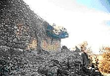 |
• MORELLA
La antigua Castra Aelia de los romanos.
En su comarca se han encontrado numerosos restos arqueológicos. Se
conservan las pinturas rupestres de Morella la Vella que atestiguan la
presencia del hombre prehistórico por estas tierras. En Les Solanes fueron
halladas alrededor de una veintena de sepulturas de la Edad de Bronce.
Con la llegada de los celtas se estableció en el actual emplazamiento de
Morella la tribu de los beribraces o brigaces.
De la estancia de los griegos destaca el denominado Tesoro de Morella; los
cartagineses, también estuvieron por estas tierras y no lograron someter a
los ilercavones, descendientes de los beribraces.
Aníbal pactó con ellos y los convirtió en aliados suyos. Mandonio, régulo
de Mandonia (Morella), participó en las guerras púnicas y los ilercavones
lucharon unas veces al lado de los cartagineses y otras a
favor de los romanos.
Tras la muerte del general Quinto Sertorio, que se había rebelado contra
el poder de Roma, toda la comarca pasó a depender de los romanos. La
ciudad adquirió el título de municipio romano y se integró en la
provincia Tarroconense.
En agosto de 2017, un pueblo visigodo del siglo VII ha sido descubierto
en la zona del Mas Sabater-Cantera de la Parreta. Se trata de un
asentamiento visigodo de dos épocas diferentes: la parte más amplia del
poblado se fecha en el siglo VII y cuenta con un edificio central que se
cree que tenía 12 metros de altura y existe otra parte de origen
andalusí.
COMARCA L'ALT MAESTRAT
• ALBOCÀSSER
Son frecuentes restos arqueológicos de tiempos prehistóricos, ibéricos
y romanos.
• ARES DEL MAESTRE
Se han hallado excepcionales pinturas rupestres pertenecientes al Arte
Rupestre Levantino, en la Cueva Remigia. También destaca el castillo con
restos ibéricos. La ciudad fue edificada y fortificada por los romanos.
• CATÍ
Se han hallado pinturas rupestres, y restos de asentamientos ibéricos
y romanos.
• CULLA
Culla remonta sus orígenes a épocas prehistóricas, prueba de ello son
los restos arqueológicos encontrados alrededor de la "Font de la
Carrasca", y en "la Roca del Corb", así como las pinturas rupestres del "Barranc
de Santa María” y “Covarxa”. También destacan los restos del poblado
íbero del Catellar.
• TÍRIG
• VILLAFRANCA DEL CID
En Villafranca se ha hallado el poblado del bronce de "L'Ereta del
Castellar", pinturas rupestres, numerosos yacimientos ibéricos. De época
romana se han hallado restos de antiguas calzadas secundarias, monedas
imperiales, etc.
COMARCA EL BAIX MAESTRAT
• ALCALÀ DE XIVERT
De época ibérica se encuentran abundantes restos arqueológicos: Poblados
como El Palau y El Tossalet, necrópolis como La Solivella, y El baixador
d'Alcossebre, lápidas escritas, restos cerámicos y metales en El Corral de
Royo, Pulpis, Irta y Xivert, monedas en Regalfarí, Alcalá y Xivert, y
enterramientos dispersos en Capicorp, Palaba y Alcossebre, que demuestran
una densa red de poblamiento en dicha época. De época romana se han hallado
lápidas funerarias en el Corral de Royo, Corral Blanc y Almedixer, y en la
vía que cruzaba de norte a sur el término por el llano de Alcalá. En junio
de 2013, los arqueólogos recuperan una vasija fenicia en las excavaciones
del poblado descubierto en el entorno de la ermita de Santa Lucía. Se
trataría de un poblado rodeado de una muralla que data de los siglos VI y
VII a.e.c.
• BENICARLÓ
Los orígenes de Benicarló, podemos hallarlos en los poblados ibéricos del
Puig y de la Tossa, cuya época de máximo esplendor se sitúa en los siglos
V y IV a.e.c, los restos de muralla de esta época pueden ser contemplados
en las afueras de la Ciudad. En sus aguas se ha hallado los restos de un
barco romano.
• CANET LO ROIG
Se han hallado en algunas excavaciones en las calles de Espalats, Sant
Antoni y Monjetades restos cerámicos correspondientes a un poblado de la
época final del bronce y principios de la cultura ibérica.
• CERVERA DEL MAESTRE
Cervera del Maestre tiene una larga historia de la que destaca el Mas
d'Aragó, una villa agrícola romana. Fundada por los griegos focenses en el
331 a.e.c.
• XERT
En su término se conservan restos de un importante poblado de la Edad del
Bronce, la Mola Murada, con recinto fortificado y restos de habitaciones
en su interior.
• JANA, LA
Por la Jana discurría la Vía Augusta como lo demuestran la existencia de
una villa romana y un miliario. Se localiza en la Plaza Mayor, frente a la
Iglesia Parroquial. Su exacta ubicación histórica es un determinado punto
de la Basa Llaurens.
• PEÑÍSCOLA
Peñiscola, remonta sus orígenes a la tribu ibera de los ilercavones.
Más tarde pasaron por aquí fenicios y cartagineses (se dice que Aníbal
vivió aquí varios años).
Posteriormente fue colonia griega, llamada Chersonesos (en griego
península). Los romanos lo tradujeron como paene+iscola "casi isla" que
dará origen al nombre de Peñiscola.
• ROSELL
El resto de población más antiguo corresponden al período del Bronce
valenciano. De la época íbero-romana destaca el interesante yacimiento del
Mas de Vito, que era a una explotación agrícola.
• SAN JORGE
Conserva restos ibéricos y romanos.
• SANT MATEU
Existen muestras de pintura rupestre levantina, restos de la Edad de
Bronce. De época íbera están inventariados varios yacimientos en el
término municipal, como el Boverot, el Tossal de Carruana, la Mare de Déu
dels Angles, la Bastida i els Molind, en su mayoría alterados por labores
agrícolas. En época
romana existía un asentamiento en el actual emplazamiento de la población,
hecho confirmado por los hallazgos hechos el año 1925 en unas obras de
canalización de aguas en la calle Sto. Domingo. En la Iglesia de Sant Pere
se documentó un silo y varios muros asociados a materiales ibero-romanos,
indicando la ocupación de la parte alta de la localidad durante el cambio
de era. En el interior de la iglesia arciprestal se realizaron dos sondeos
arqueológicos donde aparecieron fragmentos de Terra Sigillata Hispánica,
correspondientes al período romano imperial. Hay otras hipótesis que
identifican la localización de la población con Intybilis, ciudad de la
Ilercavonia citada por los autores clásicos.
• TRAIGUERA
En el siglo VI-I a.e.c., era la ciudad íbera llamada llercavonia, donde
surgió el mítico Caudillo Mandomio, "el Viriato del Maestrazgo", llamado
así por haber unido a las tribus llercavonas contra el general romano,
Escipión. Por Traiguera pasaba la "Vía Augusta''. De este periodo se
conserva un "Dionisos" en bronce, restos de cerámica y algunos yacimientos
sin explotar.
• VINARÒS
Son inciertos los orígenes de la ciudad de Vinaròs. Sus orígenes se
remontan al asentamiento del poblado ibérico de "El Puig".
COMARCA LA PLANA ALTA
• ALMASSORA
La actual ciudad está asentada sobre restos arqueológicos de periodos
anteriores, Ibéricos y del
Bronce Medio. El río Mijares era conocido por los romanos como "Idubeda".
En la huerta gracias a la toponimia, conocemos posibles lugares donde
pudieron existir villas romanas, es el caso de la Vila - Roja, donde en el
año 1998 aparecieron restos de sillares en piedra conformando parte de una
acequia de regadío.
|
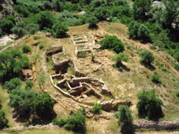 |
El poblado ibero del Torrelló del Boverot, está situado en las terrazas superiores del río Mijares,
es muy pequeño en extensión, pero se han hallado, piezas excepcionales
tanto por sus formas como por sus decoraciones.
Una de las fases que mejor están datadas es la que se produce alrededor de
las siglos VIII - VII a.e.c., donde se construyen unas viviendas
elipsiodales en las cuales se han hallado restos cerámicos realizadas a
mano y de colores negruzcos. Posteriormente, hay un cambio en el sentido
orientativo de las casas, construyéndose de norte a sur, con muros
completamente rectilíneos, donde se hallaron restos de las ánforas
conocidas como fenicias, en las cuales se ha documentado que llevaban
unas vino y otras salazones. En la última fase de la ocupación del
poblado, a finales del siglo II a.e.c., encontramos diversas viviendas que
se alinean entorno a una calle central de un metro de anchura, donde se
han encontrado unas escaleras con cuatro peldaños. |
En el interior de una de estas casas y situado debajo del suelo de una
chimenea, se hallaron los restos de un niño recién nacido. En los restos
cerámicos se han documentado miel con restos de higos o miel
con frutos carnosos, además de la existencia también en ánforas de cebada
fermentada o cerveza. En cuanto al estudio de los huesos, se han detectado
animales domésticos principalmente, gallos, ovejas, cabras, conejos,
caballos, cerdos, y restos de un ciervo.
La excavación iniciada a mediados de febrero de 2021 ha descubierto
cerca de 10 metros de muralla iberorepublicana.
• BENICÀSSIM
Benicàssim posee vestigios de poblamientos que se remontan a la Edad de
los Metales. Eneolíticos son los materiales aparecidos en la Comba, la
Mola del Cigalero, y pertenecen a la Edad del Bronce los enterramientos de
Fontallada y las capas inferiores de las ruinas del Castillo.
• BENLLOCH
En el término municipal se han hallado vestigios íberos. La Vía Augusta
cruza el término municipal de Norte a Sur. Está totalmente señalizada y
han aparecido restos arqueológicos diseminados junto a ella. Este tramo que forma parte de la Vía
Augusta en el itinerario entre San Mateo y Pobla Tornesa, recorrido que se
conoce tradicionalmente como Camí dels romans. La actuación de 2012, ha recuperado un
tramo de calzada, de unos 30m de largo y 5'5m de anchura media. Fotos 2012
y 2020.
|
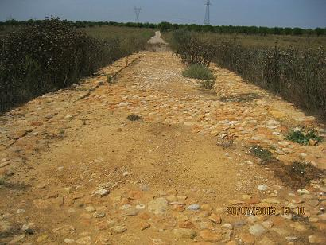 |
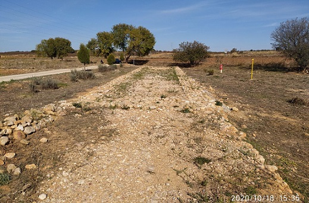 |
• BORRIOL
Por esta localidad discurría la Vía Augusta. Numerosos yacimientos nos
hablan de su pasado desde la Prehistoria como las pinturas rupestres de La
Jonquera, y restos de la civilización íbera y romana.
De época romana destaca el miliario romano Siglo III de la época del
Emperador Decio que jalonaba el paso de la Vía Augusta romana por Borriol.
• CABANES
De época romana se han hallado en las inmediaciones de la población varios
fragmentos de lápidas, numerosos los hallazgos de cerámica y monedas
romanas en el Pla del´arc, extensa llanura de 24 kilómetros cuadrados que
toma el nombre del famoso arco que está en su centro.
|
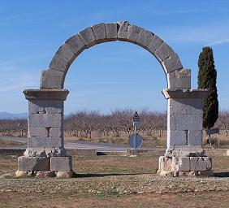
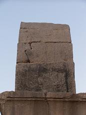 |
Este arco está formado por dos pilares cuadrangulares, opus
quadratum, sobre los que se apoya un arco de medio punto compuesto
de 14 dovelas; su altura actual es de 5,8 metros y su luz de 4m,
careciendo desde el siglo XVII de enjutas y entablamento. Las seis
dovelas centrales del arco tienen unos agujeros de 10x5 cms. que
servirán para sujetar los sillares del entablamento, al cual
pertenecen sin duda las piedras molduradas, convertidas en
abrevaderos, del inmediato "Pou de la Roca” y las siete existentes
en un edificio del "Carrer Nou" de Cabanes. En 1873 la Comisión
Provincial de Monumentos de Castellón, para garantizar su mejor
conservación, desvió el camino que pasaba por debajo de él, hizo
pavimentar su base y colocó los catorce pilones. Se cree que su
construcción es del siglo II; en base al hallazgo al pie del mismo
de terra sigillata y varias monedas de esta época, además de su
semejanza con otros monumentos coetáneos. Se cree que es un
monumento funerario de carácter privado; relacionado con una Villa
agrícola cercana a la Vía Augusta.
Todo parece indicar que Cabanes fue fundada en la época romana como
una mansión de la vía Augusta hoy Cami del romans, con el nombre de
Ildum. |
• CASTELLÓ DE LA PLANA
De época romana
se hallaron los restos de una necrópolis romana en las inmediaciones de
la basílica de la Mare de Déu del Lledó. Y los restos de la villa romana
en el barranco de Fraga. La villa romana de
Vinamargo.
• COVES DE VINROMÀ, LES
Sobre el nombre de la villa existe la duda de si su origen es romano
Vincens Roma o árabe Cide Aben - Romá. Se ha hallado un asentamiento romano como lo demuestra
el fragmento correspondiente a la parte central del frontón de un mausoleo y de un miliario encontrado en el "Pont de la Pedra
Llerga".
• OROPESA
Existen vestigios del paleolítico e íberos.
• POBLA TORNESA, LA
Por una de sus calles más importantes, discurre la Vía Augusta, de la
que se conservan aún tres miliarios, a lo largo de la senda del Romans.
• SANT JOAN DE MORÓ
En esta localidad se halla el Tossal del Mollet con una superficie
aproximada de quinientos metros. En el lado NE se observa los restos de la
fortificación, mientras que el lado S corresponde a la zona que debió
ocupar el poblado, cuyas construcciones apoyadas en la pendiente, ocupan
una extensión de aproximadamente cien metros. Se trata de un verdadero e
interesante complejo arqueológico, del que con relativa facilidad se
diferencian cada una de sus partes más significativas: una villa, una
acrópolis, y un castillo de forma rectangular cuya ocupación se constata
ya en los alrededores del siglo V y hasta el IX.
• SIERRA ENGARCERÁN
Sierra Engarcerán tiene algunas pinturas rupestres de arte levantino,
declaradas Patrimonio de la Humanidad por la UNESCO. De época ibera
destaca el Tossal de la Vila.
• TORRE ENDOMÉNECH
Los primeros vestigios de ocupación humana se encuentran en la Lloma
Forner y els Racons, donde se ha hallado un poblado ibérico anterior al s.
V a.e.c.
• TORREBLANCA
Es evidente la romanización de toda esta zona, la costa de Torreblanca fue
muy visitada por naves romanas. En Torreblanca se hallaron 204 monedas de
oro de los siglos I y XI.
Las menciones del "camí dels romans" o del "camí vell", discurren hoy por
fincas roturadas o por cultivos donde fueron hallados restos de cerámica y
ánforas.
• VALL D´ALBA
De época romana destaca la Villa Romana del Pla de l’Arc. Frente al
arco, las excavaciones recientes han puesto al descubierto parte de una
villa romana conocida desde antiguo. junto a la cual se han exhumado 30
metros de uno de los márgenes de la Vía y parte del pavimento. En la
actualidad se encuentra muy destruida por las labores agrícolas y por las
diversas obras realizadas en el entorno del monumento, la aparición de un
importante conjunto monetario en el que se incluyen diversos denarios e
incluso áureos, da testimonio de la importancia del asentamiento.
• VILAFAMÉS
Las primeras evidencias de ocupación del entorno de Vilafamés, se
hallan en la Cova de Dalt del Tossal de la Font, donde se localizaron
restos antropológicos con una antigüedad de 80.000 años. En la Cova del
Matutano, se localizó un yacimiento del Paleolítico Superior, con una
antigüedad entre el 14.000 y 11.000 años.
También se hallaron pinturas rupestres en el Abric del Castell, conjunto
datado en periodo Eneolítico. Además existen diseminados por el término
municipal gran cantidad de asentamientos de diversos periodos entre los
que destaca el yacimiento ibérico els Estrets-el Racó de Rata o El Tossal
de la Font. De época romana destacan los restos de la villa romana
d'Aiguamolls y la xcavación en la zona “Partida dels Bufadors”.
• VILANOVA D'ALCOLEA
Los primeros vestigios de ocupación humana se remontan a la época
ibera cuyo asentamientos se localiza en el Puig Pedró, aunque proliferan
más los restos de origen romano, como es el caso de los yacimientos de
Els Gastells y el Más del Senyor. La vía Augusta atraviesa este término de
norte a sur siendo paralela al trazado de la CS-238, habiéndose
descubierto en el año 1992 restos de Ildum, estación romana de la
provincia de l'Hostalo. Entre los restos hallados de época romana destaca
un miliario en buen estado de conservación. El Miliario localizado, junto
a la mansión del Ildum y la Vía Augusta, está realizado en piedra
arenisca, tiene una altura de 2,70m y un diámetro de 0,62m. Se realizó en
la época de Caracalla en el año 214 indicando la distancia de 283.000
pasos desde el inicio de la Vía en los Pirineos.
En febrero de 2024, en el yacimiento arqueológico del Hostalot-Idlum, se
ha hallado un broche romano de plata que los expertos han datado en el
siglo II. Se trata, según indica el arqueólogo responsable de la
excavación, Josep Carbó, de una pieza «excepcional» por su rareza y
calidad.
COMARCA L'ALCALATEN
|
• L´ALCORA
Restos de la dominación romana se hallan en las partidas de Montmirà,
la Pereta y, sobre todo en la de Santa, donde existen vestigios de
un gran asentamiento rural de época imperial junto al Camí dels
Bandejats, que unía la zona prelitoral con las tierras altas del
interior y cuyo origen pre-romano parece más que probado.
En la partida de Santa también han sido halladas 8 lápidas
sepulcrales con epígrafe latino y unas termas romanas datadas entre
los siglos I y IV y de unos 175 m2. El enclave presenta un estado de
conservación variable, con un elevado grado de arrasamiento en el
área sur. Los restos corresponden, en gran medida, a la cimentación
de las construcciones. La entrada se realizaría por un acceso
lateral. Desde este, se accede al frigidarium, habitación que
funcionaría como vestíbulo. El suelo estaba decorado con un mosaico
del que se ha conservado un trozo. Actualmente se está restaurando
en el Museo de Cerámica. Son las únicas termas romanas que conservan
una planta entera o completa en Castellón. Las termas se
descubrieron como consecuencia de las obras de construcción del
nuevo vial entre l’Alcora y Sant Joan de Moró en 2003. |
 |
• ATZENETA DEL MAESTRAT
Los orígenes de Atzeneta son muy antiguos. Se ha hallado restos de
cerámica ibérica en los alrededores
de la ermita de San Juan del "Castell" y otros restos en las terrazas del
Monleón.
• COSTUR
Los vestigios conocidos de época que se han encontrado son una lápida
sepulcral de época romana.
• LUCENA DEL CID
Ruinas y restos de la época del bronce y de cultura íbera.
• USERES, LES
Existen restos ibéricos, construcciones y cerámica. Como restos más
antiguos se han encontrado un par de hachas de piedra pulimentada en la
Ponsa.
• VISTABELLA DEL MAESTRAZGO
Destaca el puente romano sobre el río Montlleó que unía la Imperial
Tarraco con Mérida, en la actualidad cruza la vía pecuaria que une Aragón
con la Plana de Castelló, recuperada y señalizada a su paso por Vistabella.
EL ALTO MIJARES
• ARAÑUEL
Existen referencias de vestigios de
ocupación humana en la Época Ibérica, pero totalmente diseminados.
• CIRAT
Su origen se remonta a una antigua villa romana.
• FANZARA
En el término municipal se han encontrado restos de poblamientos iberos y
romanos que delatan una ocupación temprana de la zona.
• MONTÁN
Estas tierras eran conocidas por los cartagineses que remontaban el
Mijares en busca de maderas para construir sus naves. De la época del
hierro destaca el yacimiento en el Monte Calvario. Es un importante
yacimiento arqueológico en el que se ha conseguido encontrar la muralla
y la puerta que daba acceso al poblado.
• PUEBLA DE ARENOSO
De la cultura celtibérica se han encontrado vasijas de cerámica en forma
de ánfora en distintos lugares de la zona. Existen yacimientos íberos en
los Caseríos de Cabezo y Los Calpes.
Sobre el que fuera puente colgante de La Puebla se asentaba un puente
romano de dos ojos o arcos, y actualmente, con el permiso del "pantano",
cuando baja el nivel todavía se ven los muros laterales donde se asentaba
la estructura. En Olba aún se conserva el puente romano de tres arcos.
• TOGA
Destaca el yacimiento del Castillet o Castillo de Ganalur. En el
yacimiento se han encontrado restos de época ibera (s. V-I a.e.c) y de
islámica (s. XIII).
• VALLAT
Restos de un poblado íbero. Se ubican en la partida de la Umbría, en
lo alto de un cerro.
• VILLANUEVA DE VIVER
El primer asentamiento parece ser íberico, de la tribu de los ilercavones,
por algunos de los restos hallados.
LA PLANA
BAIXA
• ALCUDIA DE VEO
Existía
un camino romano denominado " La Calzada" que pasaba por los lugares que
hoy ocupan los pueblos de Tales, Benitandús, Veo y Alcudia de Veo, y que
bordeando la Sierra de Espadán uniría la costa con Segorbe.
• ALFONDEGUILLA
De época romana se conserva el
acueducto romano del Arquet. En el santuario del Alt de Pipa fueron
halladas lucernas y fragmentos de vasos cerámicos. El Pont de l'Aigua, se
cree que era un acueducto de origen romano, reconstruido por los árabes.
• ALMENARA
En Almenara se encuentran los
Dolmens d'Almenara un «dolmen calcolítico o megalito compuesto por un
menhir y una serie de dólmenes. Habitada
por iberos, griegos, cartagineses y romanos. En Almenara se localiza el
campamento romano más antiguo de Hispania. Fue localizado por A. Schulten
a 9km. al norte de Sagunto. Se conservan los muros. Data del año 217 a.e.c
y fue edificado por los Escipiones en su marcha por la costa levantina.
Fue descrito por Polibio (3 .97.6):«llegaron a la ciudad de Sagunto y
acamparon a unos 40 estadios de distancia, junto al templo de Afrodita.
Ocuparon un lugar muy estratégico, porque les ofrecía seguridad frente al
enemigo y además era apto para que los aprovisionaran desde el mar».
Asentado en una terraza de una colina desde donde se divisaba el valle, a
la vez que estaba cerca del mar. Tiene forma trapezoidal. Su lado frontal
tiene una longitud de 300m. El lado superior, 200 m; y los lados, 500m.
Tenía 16 torres y muros de 1,20m de espesor. Desde su cima se divisan las
ciudades de Sagunto, Valencia y Castellón.
Almenara fue un importante puerto romano.
En el yacimiento Punto del Cid se aprecian los restos identificados con un
templo de Venus citado por los antiguos y los restos de un campamento
romano.
• ARTANA
Los primeros vestigios de población los
encontramos en el mesolítico.
De
los restos del castillo medieval
algunos de sus elementos se han atribuido a los romanos.
• ALQUERIAS DEL ÑIÑO PERDIDO
En Alquerías del Niño Perdido se
encuentra el yacimiento de la Regenta, un asentamiento en llano de las
épocas romana, medieval y moderna donde se han localizado restos de
cerámica y constructivos. Se han encontrado restos arqueológicos de la
ingeniería romana y musulmana como las acequias del Diablo, compartidas
con la vecina población de Vila-real. Otro monumento que confirma la
presencia romana en la zona es el puente romano alzado sobre el río Anna,
también conocido como “río Seco”. También se hallaron fragmentos
cerámicos romanos, los contrapesos de prensa encontrados en el
yacimiento romano de “El Torreón”.
|
•
BETXÍ
Existen vestigios de población desde la
época del bronce.
Destacan los poblados de Conena, els Castellets el de Sant Antoni
pertanyen. Son muy abundantes los restos cerámicos.
Con
la romanización, la población se trasladó al llano donde hallamos los
vestigios en la Torrassa, de la obra hidráulica de la Bassa Seca, de la
que se conservan algunos restos.
El castillo de Betxi es de origen
romano.
|
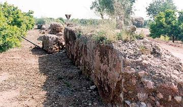 |
• BURRIANA
Se han hallado
vestigios de diversas civilizaciones antiguas, destaca el yacimiento
fenicio de Vinarratgell. De época romana destaca el asentamiento romano
de Sant Gregori y las termas en la partida del Palau. El yacimiento de La
Regenta II, un asentamiento rural de los siglos I, X a XVI, en el que
aparecen restos de cerámica dispersos.
La villa romana de Sant Gregori, es
la villa marítima excavada más grande de la Comunitat Valenciana, así
como de toda la zona mediterránea.La villa de Sant Gregori, cuya
construcción data entre el siglo I a.e.c. y el siglo IV.
En noviembre de 2022, los trabajos de excavación en el yacimiento
arqueológico de Sant Gregori de Burriana han sacado a la luz una
necrópolis prehistórica que por la densidad de los hallazgos es en estos
momentos la más importante de la Comunitat Valenciana, y también se ha
descubierto un yacimiento inédito con importantes nuevos restos iberos y
musulmanes, conjuntamente con una villa romana.
Las excavaciones de la villa romana, han identificado diversas
estructuras conocidas como cella vinaria, destinadas a la producción de
vino, y terrenos agrícolas, denominados fundus, dedicados al cultivo de
la vid. Además de estos edificios, las excavaciones han sacado a la luz
diez trincheras utilizadas para la plantación de vides que, gracias a
autores romanos como Columela y Plinio el Viejo, se conocen con el
nombre de sulcus. Estas trincheras, descubiertas en perfecto estado de
conservación, presentan una disposición paralela y una orientación
noreste-suroeste, lo que permitía un cultivo eficiente de varias cepas
en cada línea de cultivo. Este
amplio complejo pertenecía al municipio romano de Saguntum.
Foto:
Universitat Jaume I.
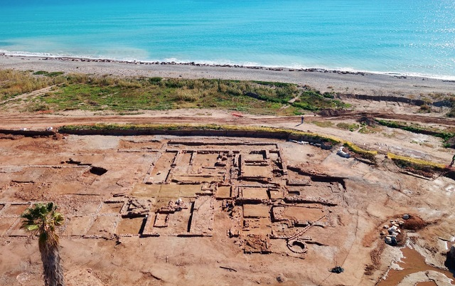
• CHILCHES
La existencia de Chilches se remonta a
la época romana, fue fundado en el año 201 a.e.c. Por esta población
pasaba la vía Augusta. De sus restos destaca la estatuilla de bronce de
Mercurio y los vestigios hallados en la partida del Alter, Senda Forcà y
eL Castellàs; un miliario, cerámicas, monedas y restos de estructuras.
• ESLIDA
Las primeras noticias de pobladores del
valle de Eslida pertenecen a la 1ª edad de bronce entre los restos
hallados, destacan los de ofrendas funerarias hallados en la Cueva de
l'Oret.
• LLOSA, LA
Pueblo de origen íbero-romano, muy ligado a la Vía Augusta. Destaca la
Villa romana del Pla, del siglo I-III. Se encuentra parcialmente
destruida, se han encontrado cerámica, ánforas...
• MONCOFA
|
Los restos arqueológicos más
interesantes hallados en el término de Moncofa corresponden a una
villa agrícola de la época imperial levantada cerca del cruce de la
Vía Augusta con el vial del "Camí Cabres", que unía la zona de la
Vaill d'Uixo con el embarcadero de la Torre. La Vila Romana de
l'Alquería.
A finales de los años 90 el Ayuntamiento excavó un espacio reducido
y se extrajeron varias piezas indicativas de que allí hubo una villa
romana. Se cree que podían existir más restos. Esta datada en los
siglos III y IV. La zona, que fue un campo de naranjos, sigue siendo
una propiedad privada. |
 |
• NULES
|
En el término de municipal de
Nules, se han hallado vestigios de civilizaciones anteriores. De la
época ibérica se han hallado restos en en el Castell de Nules, la
montaña de Santa Bárbara, la montaña del Tossal y la partida de
Alcúdia, junto a Mascarell.
La villa de Benicató es el yacimiento romano más destacado, era una
importante villa romana rural, construida entre el siglo I a.e.c y
habitada hasta el IV, teniendo su periodo de esplendor en el siglo
II. Destaca su impluvium circular. Fue descubierta el 23 de
diciembre de 1955 cuando se realizaban tareas agrícolas en la zona.
También han encontrado otros
vestigios romanos en el Castell de Nules, la actual Font Calda de
Villavieja, en el montículo de Santa Bárbara, en la partida de
Torremotxa, en la finca del Secanet, en el Rajadell, en la Goleta,
en el Camí Real, en el Estany y en el Camí dels Albiacs).
|
 |
|
• ONDA
La Sepelaci romana. En Onda hallamos los restos de la calzada
romana.
Este camino empedrado
discurre por las Pedrizas, dirigiéndose desde la zona del Pla dels Olivars
hasta el Mas de Pere y las masías del Sitjar; tiene un segundo ramal que
se dirige al río Sonella hasta unas estructuras que parecen ser un puente.
Tiene una anchura de entre dos y tres metros y una longitud total de 1,5 a
2 kms.
De la Edad del Bronce y Cultura Ibérica, destaca el yacimiento de el
Torrello, situado sobre una terraza elevada delimitada al norte por el
Barranco del Torrelló y al sur por el río Mijares, confluyendo ambos al
este y formando una especie de península, de acceso fácil únicamente
por el oeste. Se han hallado varios lienzos de murallas. El
yacimiento tiene una extensión de unos 2100 metros cuadrados. En el
interior se descubrieron diversas habitaciones y se hallaron restos
cerámicos de esta época.
En mayo de 2012 las obras en el campanario de la Asunción sacan a la
luz una
lápida romana. “Pomplonio L(uci) f(illio Marce (ello) (…) r J(ilia) Marc
(ella f(ilio) pii (ssimo fecit et sfici”, lo que parece tratarse de
una dedicatoria hecha por Marcela a su hijo L. Pomponios Marcellus.
Las lápidas, junto a la calzada y otros vestigios, son la memoria de
aquel tiempo en el pueblo se llamaba Sepelaci. |
 |
• TALES
En el término municipal de Tales, se
hallaron vestigios de la Época Ibérica.
• VALL D'UIXÓ, LA
La
Vall d'Uixó ha estado ocupado por grupos humanos desde la Prehistoria.
En Sant Josep se encuentran los restos de un poblado ibérico, junto a la
Ermita de la Sagrada Familia. BIC desde 1999. Encontramos distintas fases
de ocupación. La Ibera del siglo VI al II a.e.c y la tardoromana siglo
IV y V. Poblado amurallado, reforzado con torres. Actualmente de ha
excavado un 20. Conserva los restos de una
muralla, torres, casas y urbanismo de la época.
|
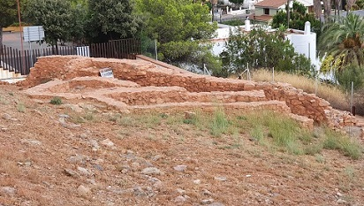 |
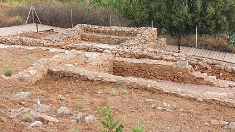 |
En la partida La Punta de Orley
se han hallado los restos de una ciudad, cuya denominación antigua no ha
podido ser identificada y cuyos restos datan de época ibera.
De época romana se han hallado restos
de villas. El acueducto de San José fue construido en época romana y
utilizando hasta mediados del presente siglo. Sufrió diversas reparaciones
en época medieval. Se encuentra completo desde su origen, en la Font de
Sant Josep, aunque enmascarado en parte por construcciones modernas.
Se ha hallado
una necrópolis hispano-visigoda de los siglos VI y VII y multitud de
vestigios. Está situada en el barrio La Unión.
• VILA-REAL
En los alrededores de Vila-real son
bastante frecuentes los testimonios de la cultura neolítica (Villa
Filomena), ibérica y de la dominación romana. De
entre sus restos cabe destacar el conjunto de acequias romanas (siglo III)
que parte de los alrededores del ermitorio de la Virgen de Gracia, cuya
parte mejor conservada es conocida como "les Argamasses" y el pequeño
acueducto denominado "els Arquets".
• VILLAVIEJA
De
época romana se conoce un santuario hispano-romano, excavado en 1979,
emplazado en la cima de la montaña de Santa Bárbara.
COMARCA
ALTO PALANCIA
•
ALGIMIA DE ALMONACID
Se ha hallado una inscripción romana a unos 200 m. de la Fuente de la
Calzada sobre un saliente de piedra de unos 3 m. de altura. Su
traducción es: Camino Privado de Marco Baebio Severino.
• ALMEDÍJAR
Existen restos de un poblado íbero y
han aparecido algunos restos romanos.
• ALTURA
Los yacimientos del Cantal o Caparrota indican la presencia de pobladores
durante la edad del bronce. También se han encontrado restos de una villa
romana en la partida del Campillo.
• AZUÉBAR
Los orígenes de la villa de Azuébar se
remontan a la Edad del Bronce. Prueba de ello son los yacimientos de la
"Peña Ajuerá" o el del Pico Bellota. DE época romana se conserva la
inscripción procedente de la villa localizada en los terreros de Zorrilla,
actualmente empotrada en la fachada de la Iglesia.
• BARRACAS
En Barracas hallamos la Villa Romana, junto al camino de Liria en la
partida los Prados, las ruinas de origen romano "el Castillejo" en la
partida el Mazorral. Existen restos iberos hallados en las partidas del
Castellar y Rajola, también hay que destacar la calzada romana
Barracas-Liria, en el actual camino de Liria.
• BEJÍS
Destacan las pinturas rupestres con una antigüedad de 7000 años, y los
restos arqueológicos de la época ibérica y romana son abundantes, de
todos ellos destaca el acueducto romano situado en la Partida de las
Rochas.
• BENAFER
Se han encontrado restos ibéricos en los yacimientos de San Roque y el
Castillejo.
• CASTELLNOVO
Los primeros vestigios de la ocupación del término corresponden al
comienzo de la edad de los metales. En el montículo de la Torre del Mal
Paso se encontró un enterramiento eneolítico en una cueva, y en la cima
del mismo monte existe un poblado ibérico, en el que se distinguen
diversos muros de habitaciones y dos torres, una circular, y otra
cuadrada. Además en la cima junto a la torre, existen los restos de un
poblado que vivió durante el mismo tiempo en que fue utilizada la cueva,
posiblemente desde fines de siglo I a.e.c. hasta el siglo V.
El castillo data del tiempo de los romanos.
• CAUDIEL
Por los vestigios hallados Caudiel estuvo habitado en la Edad del
Bronce; como demuestran los yacimientos de la Cueva de la Alcabaira,
Cueva de la Rocha, Cueva del Generoso y el abrigo y sima de Fuente la
Higuera. De la época Ibérica destaca el yacimiento del poblado de la
Alcabaira y el Castillarejo.
De época romana se han hallado varias monedas y unas inscripciones
latinas halladas en su término. Hay catalogadas cinco inscripciones,
cuatro funerarias y una rupestre. De las funerarias, una de ellas se
encuentra en paradero desconocido y las restantes están expuestas en el
pórtico de la iglesia. La inscripción rupestre está gravada sobre una
roca en la Peña del Letrero
De los vestigios hallado destaca la torre de molino, hay quienes la
atribuyen a Anibal “Turris Hannibalis”, atalayas de vigilancia datada en
el año 220 a.e.c.; pero otros la datan en época medieval.
• CHÓVAR
Chóvar posee yacimientos arqueológicos como el Poblado Ibérico del
Rubial, y la Cueva y la Bellota, de la Edad del Bronce.
• HIGUERAS
Se conocen asentamientos iberos cerca del Municipio y referencias
escritas en tiempos de la dominación Romana, que hablan de unas tribus,
en concreto los edetanos que bien pudieran estar asentados en esta zona.
En las estribaciones de la población se encuentran dos puentes romanos.
• JÉRICA
Del Periodo Ibérico existen varios asentamientos. Del Periodo Romano
existen restos muy importantes, citar de ellos la cantidad de lápidas
encontradas en el término municipal y que la convierten en una de las
más importantes dentro del Alto Palancia. Destaca la lápida conocida
como de "Quintia Prova", ya que es la única existente en la antigua
Hispania que cita el precio que tenía un arco romano con dos estatuas.
• NAVAJAS
Los restos arqueológicos más antiguos encontrados en Navajas se remontan
al Calcolítico y principios de la Edad de Bronce. Cerca del casco urbano
existen restos romanos que se corresponden con una villa.
• PINA DE MONTALGRAO
Poblada desde el Paleolítico. En el termino se han encontrados restos de
una torre íbera, la Torre del Prospinal. Se trata de una torre defensiva
datada entre los siglos IV–II a.e.c. Se localiza en la hoya de Huguet y
a su alrededor existen otras torres de menor importancia. La
construcción es casi cuadrangular, mide unos siete metros por cada lado
y tiene una altura de 2,30 m.
De época romana es la Torre de los Castillejos.
• SEGORBE
Los hallazgos arqueológicos encontrados en el Cerro de Sopeña sitúan un
asentamiento humano en torno al 1550 a.e.c y después sería habitado por
íberos y romanos. Como elementos del periodo romano encontramos en los
asentamientos numerosos fragmentos de "tegulae", y recipientes de
almacenaje como "dolias" y "ánforas" empleados para guardar los cereales
y líquidos, numerosos fragmentos de "terra sigillata" y otros elementos
utilitarios De las villas de La Loma y de la Masía de Marín se exponen
materiales arqueológicos en el museo igualmente característicos, como
fragmentos de ánforas, tégulas y otros recipientes cerámicos.
• SONEJA
Poblada desde el paleolítico. De la edad del bronce existen vestigios en
el yacimiento del Alto del Picacho. De época romana se ha hallado restos
de una villa en la partida de Zorrilla, datada en los siglos II y III.
También de esta época hay que hacer mención al asentamiento de la Cueva
de la Cambra, en la partida de Palomera, dedicado a usos ganaderos.
Sobre todo destaca de el puente de origen romano.
• SOT DE FERRER
El poblado íbero de Rochina del siglo III-II a.e.c, ubicado en el Alto
de los Moros. La extensión del poblado es de unos 500 metros cuadrados.
Se han identificado al menos hasta 17 estancias, y la muralla que
perimetral. Un incendio, ocurrido en tiempos de la guerra entre Metello
y Sertorio, siglo I, probablemente provocó el final de la ocupación del
mismo.
• TERESA
Los historiadores consideran que se estableció un emplazamiento romano,
como lo demuestra un castro descubierto en el Monte Gómez; por otra
parte se han encontrado restos de finales de los tiempos ibéricos y de
la plena romanización.
• TORO
El nombre de la villa se fundamenta en los radicales prerromanos Tor o
Tar , aunque también se ha identificado como Torus; protuberancia en el
terreno o montículo.
Se han hallado vestigios de un asentamiento íbero en la Peña de las
Majadas y las referencias romanas en la partida de Santo Domingo.
• VIVER
Los primeros vestigios de población se han hallado en las cuevas del
Sargal, del Paleolítico Superior. De época ibera destaca la torre
localizada en las cuestas del Ragudo. El primer dato histórico
documentado de Viver son unas "aras" grabadas con la palabra Porcio, de
cuando se cree que se fundó esta localidad, con el nombre de Belsino, en
el año 193 a.e.c. En el parque de la Floresta se conservan varias
dependencias que se asocian con un complejo termal o con unos estanques,
dedicados a la cría de peces, del siglo I a.e.c.(vivarium). En el 2007
se descubrió una villa romana. La villa data del siglo I-II. Estaba
formada por varias dependencias con hipocausto. También se descubrieron
varias canalizaciones de un manantial que abastece actualmente a la
población. Durante los meses de octubre y noviembre de 2023 se ha
llevado a cabo el “proyecto de consolidación del balneum oriental de la
villa romana de El Prado”. Foto: altomijares.info
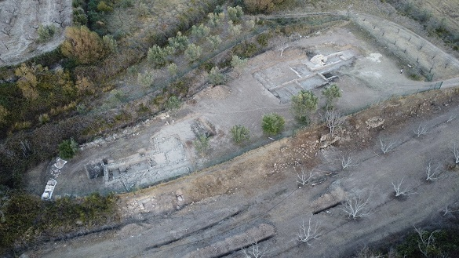
http://www.castellonarqueologico.es/
|